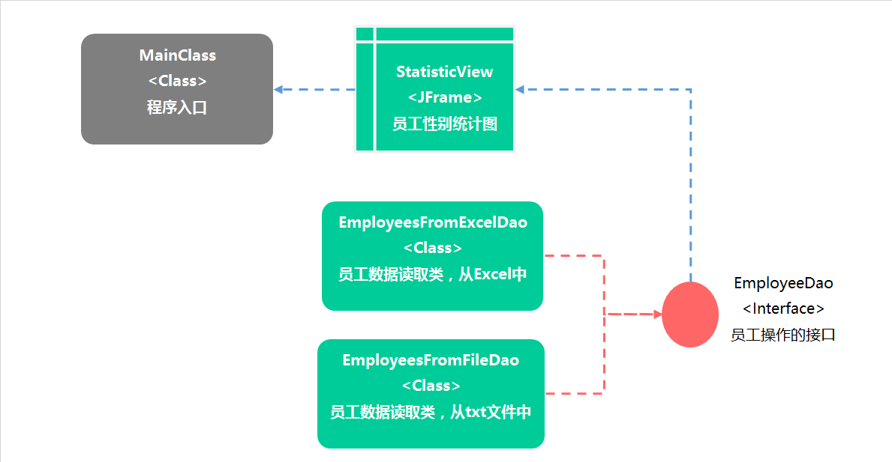
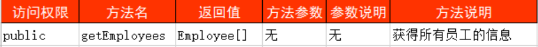

16版.数据抽取与统计
前置任务1. 实验素材：
1-1. 如果您正在使用《CSG虚拟开发环境》，请跳过该步骤。
1-2. 下载本场景相关的开发工程包：点击下载
前置任务2. 如何导入项目工程：
2-1. 打开Eclipse。
2-2. 选择菜单：File - Import - Existing Projects Into Workspace，点击Next按钮。
2-3. 在新窗口中，点击Browse按钮选择您想导入的Eclipse项目工程目录。
2-4. 点击Finish完成项目导入。
1、实验要求
本实验要求：以统计员工性别为业务背景，体验接口的特性。
1-1. 业务说明：
1-1.1. 本实验以统计员工性别为业务背景。
1-1.2. 员工性别统计完成后，将在可视化窗体中呈现统计结果。
1-1.3. 员工数据可来源于不同的文件：txt文本文件或Excel文件。
1-1.4. 本实验要求，学生创建一个用于规范员工数据获取业务的接口。
1-1.5. 本实验涉及的相关组件如下图：

1）StatisticView：员工性别统计窗体
该窗体的主要作用是：将获取的员工性别统计结果，以饼状图的形式呈现。
本窗体已经实现，学生需要完成的是：对获取的员工性别数据进行统计。
2）EmployeeDao：员工操作接口
该接口的主要作用是：规范不同的数据获取业务，并向员工性别统计窗体提供完整的员工数据。
学生需要完成对本接口的定义。
3）EmployeesFromExcelDao：员工数据读取类（来自于Excel文件）
该类的主要作用是：从Excel文件中读取员工数据。
本类已经实现，学生需要使其实现EmployeeDao接口和相关函数。
4）EmployeesFromFileDao：员工数据读取类（来自于txt文本文件）
该类的主要作用是：从txt文本文件中读取员工数据。
本类已经实现，学生需要使其实现EmployeeDao接口和相关函数。
1-2. 导入环境工程包：
1-2.1. 按前置任务1和任务2的要求，加载实验36所需的开发环境包。
1-3. 创建员工数据读取统一接口：
1-3.1. 作用：规范数据读取，并向界面提供访问员工数据的统一方法。
1-3.2. 限制1：在cn.campsg.java.experiment.dao包中创建EmployeeDao接口。
1-3.3. 限制2：在EmployeeDao接口中定义员工数据的读取方法，形式如下：

1-4. 使员工数据读取类实现EmployeeDao接口：
1-4.1. 修改EmployeesFromExcelDao类，使之实现EmployeeDao接口。
1-4.2. 将EmployeesFromExcelDao类中的readEmployees方法，重命名为
EmployeeDao接口中定义的getEmployees方法。
1-4.3. 修改EmployeesFromFileDao类，使之实现EmployeeDao接口。
1-4.4. 将EmployeesFromFileDao类中的getEmployeesFromFile方法，重命名
为EmployeeDao接口中定义的getEmployees方法。
1-5. 界面获得员工数据并显示：
1-5.1. 定位cn.campsg.java.experiment.StatisticView窗体类。
1-5.2. StatisticView访问EmployeeDao接口方法，获得员工数据。
1-5.3. 对获得的员工数据进行性别统计（统计男女人数）。
1-5.4. 将性别统计结果设置到StatisticView的图表控件上。
1-5.5. 界面呈现图表。
1-6. 体验组件低耦合特性：
1-6.1. 通过修改配置文件，实现数据文件读取类的切换，体验接口的解耦特性。
1-6.2. 通过cn.campsg.java.experiment.util.BeanManager类的getDaoBean方法获取不同的数据文件读取类。
1-6.3. 修改conf/bean.properties文件，实现数据文件读取类的切换。
1-6.4. 说明：不同的数据文件读取类将获得不同类型文件中的员工数据。
2、实现思路
2-1. 导入环境工程包。
2-2. 创建员工数据读取统一接口：
2-2.1. 在cn.campsg.java.experiment.dao包中创建EmployeeDao接口。
2-2.2. 在EmployeeDao接口中定义员工数据读取方法，形式如下：
+ 提示 public Employee[] getEmployees() throws IOException; |
2-3. 使员工数据读取类实现EmployeeDao接口
2-3.1. 修改EmployeesFromExcelDao类，使之实现EmployeeDao接口。
2-3.2. 将readEmployee方法重命名为getEmployees，从而达到实现接口的目的。
注意：方法体中的代码已经实现了从Excel文件中读取员工数据的功能。
2-3.3. 修改EmployeesFromFileDao类，使之实现EmployeeDao接口。
2-3.4. 将getEmployeesFromFile方法重命名为getEmployees，从而达到实现接口的目的。
注意：方法体中的代码已经实现了从Txt文件中读取员工数据的功能。
2-4. 界面获得员工数据并显示：
2-4.1. 定位：cn.campsg.java.experiment.StatisticView窗体类。
2-4.2. 找到StatisticView类中的getEmployeeStatistic方法，该方法的作用是统计员工性别并返回。
2-4.3. getEmployeeStatistic方法由窗体调用，返回类型含义如下：
1） int[]数组的返回类型用于描述男性员工与女性员工的数量。
2）数组的第0位用于表示男性员工的数量。
3）数组的第1位用于表示女性员工的数量。
2-4.4. 创建EmployeesFromFileDao类的实例。
2-4.5. 定义员工对象数组employees，获取getEmployees方法的返回结果。
2-4.6. 定义int型的变量：man和woman，分别用于保存男性员工与女性员工的人数。
2-4.7. 遍历employees数组，统计员工性别：
1）如果数组中员工对象的gender属性为：“男”，则man变量加1。
2）如果数组中员工对象的gender属性为：“女”，则woman变量加1。
2-4.8. 返回性别统计结果：
1）构造一个大小为2的int型数组，存储性别统计结果。
2）将man和woman变量数据依次存放入数组中。
注意：man和woman在数组中的位置不能颠倒，否则视图显示结果将会相反！
3）返回统计结果。
2-4.9. 如有感兴趣的同学，可以通过StatisticView类的initialize方法，了解图表如何显示员工性别统计数据。
3、验证与测试
3-1. 在工程中定位主类：MainClass。
3-2. 测试1. 显示Txt文本中的员工性别统计结果：
3-2.1. 右键点击MainClass类，依次选择：Run As->Java Application。
3-2.2. 运行程序，查看输出结果是否符合预期。
3-3. 测试2. 显示Excel文本中的员工性别统计结果：
3-3.1.在StatisticView类的getEmployeeStatistic方法中，将代码做如下修改：
+ 提示 // 从Excel文件中获取员工数据 EmployeeDao dao = new EmployeesFromExcelDao(); // 从Txt文件中获取员工数据 //EmployeeDao dao = new EmployeesFromFileDao(); |
3-3.2. 测试从Excel文件中获取员工数据的运行结果，并体验接口的一致性。
3-3.3. 右键点击MainClass类，依次选择：Run As->Java Application。
3-3.4. 运行程序，查看输出结果是否符合预期。
3-4. 测试3. 体验组件低耦合特性：
3-4.1. 在StatisticView类的getEmployeeStatistic方法中，将代码做如下修改：
+ 提示 //实例化dao层对象 EmployeeDao dao = BeanManager.getDaoBean(); // 从Excel文件中获取员工数据 //EmployeeDao dao = new EmployeesFromExcelDao(); // 从Txt文件中获取员工数据 //EmployeeDao dao = new EmployeesFromFileDao(); |
3-4.2. 体验接口的解耦特性：
1）修改工程目录下的conf/bean.properties文件。
2）依次修改为：
EmployeesFromExcelDao和EmployeesFromFileDao
注意：包名必须是完整路径：cn.campsg.java.experiment.dao.
3-4.3. 每次修改类名后，运行程序，查看输出结果是否符合预期。
任务答案
1. 代码清单：cn.campsg.java.experiment.dao.EmployeeDao.java
public interface EmployeeDao { public Employee[] getEmployees() throws IOException; } |
2. 代码清单：cn.campsg.java.experiment.dao.EmployeesFromExcelDao.java
public class EmployeesFromExcelDao implements EmployeeDao{ public EmployeesFromExcelDao() {} /** * 从excel中读取所有的员工信息 * @return 返回所有员工组成的对象数组 * @throws IOException */ public Employee[] getEmployees() throws IOException { …… } } |
3. 代码清单：cn.campsg.java.experiment.EmployeesFromFileDao.java
public class EmployeesFromFileDao implements EmployeeDao{ public EmployeesFromFileDao() {} /** * 从文本文档中读取所有的员工信息 * @return 返回所有员工组成的对象数组 * @throws IOException */ public Employee[] getEmployees() throws IOException { …… } } |
4. 代码清单：cn.campsg.java.experiment.StatisticView.java
public class StatisticView { /** * 获得员工性别的统计结果(需要学生体验接口的特性） * @return 返回男，女员工的统计结果 * @throws IOException 文件读取失败 */ public int[] getEmployeeStatistic() throws IOException { //使用BeanManager的getDaoBean()方法创建Employee接口的一个实例，名为：dao。 EmployeeDao dao = BeanManager.getDaoBean(); //调用dao的getEmployees()方法获得所有员工的数据 //将返回的结果存入名为employees的对象数组中。 Employee[] employees = dao.getEmployees(); //定义int型的变量man,woman分别用于保存男女总人数。 int man = 0, woman = 0; //遍历employees数组 //如果数组中当前位置的员工是女生，woman变量加一，否则man变量加一。 for(Employee e : employees) { if("女".equals(e.getGender())) { woman++; } else { man++; } } //构造一个大小为2的int型数组,名为statistic。 //man，woman在数组中的位置不能颠倒，否则视图显示的结果会相反！ int[] statistic = new int[]{man, woman}; return statistic; } } |
完成效果预览
移动端开发步骤